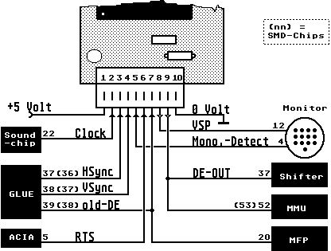

Previous
Next
TOC
Autoswitch OverScan ST - Einbauhilfe

Autoswitch OverScan Bild flackert bei DMA-Zugriffen?
Testweise einen 8.2pF (Picofarad) Kondensator auf der OverScanpla-
tine von der 2 MHz-Taktleitung des Soundchips an Masse anlöten!
Einige Shifterserien (Videochips) wollen anscheinend zuerst nicht
mitspielen bei einem höher getakteten Board. Das sieht dann so aus,
daß der Bildschirm permanent in 16 Pixelbreite hin und her springt.
Abhilfe bringt hier ein 100 nF Kondensator von Pin 40 an Pin 1 des
Shifters.
Bei schneller getakteten Mainboards kann man folgendes probieren:
Um das Verzocken des Video-Shifters beim Autoswitch zu vermeiden,
sollte man anstelle des 2 MHz Taktes der aus dem 4024 (Pin 5) kommt
und an Pin 11 des 74HC574 geht, den alten 2 MHz Takt der Glue (PLCC
Pin 54) nehmen um damit den 574 zu steuern, eventuell die 2 MHz mit
einem kleinen Kondensator nach Masse beschalten. Aufgrund der Board-
beschleunigung läuft dieser Takt auch um den entsprechenden Faktor
schneller und es ist ein synchrones umschalten möglich, da alle in-
ternen Videovorgänge im ST auf diesen Takt synchronisiert werden.
Dies bringt auch bei der normalen Auflösung etwas.
In den 1040STe und MegaSTE Computer kann man die OverScan ST Grafik-
erweiterung nicht einbauen, da dort die MCU und der GLUE zu einem
Chip zusammengefasst wurden und man dort an eine Verbindung zwischen
den beiden Chips nicht mehr herankommt um diese aufzutrennen. Genau
handelt es sich um das DE-Signal (Display Enable).
Kapitel Autoswitch OverScan ST - Einbauhilfe, Seite 1